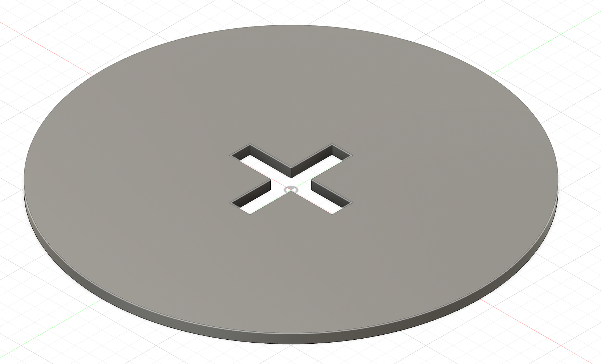
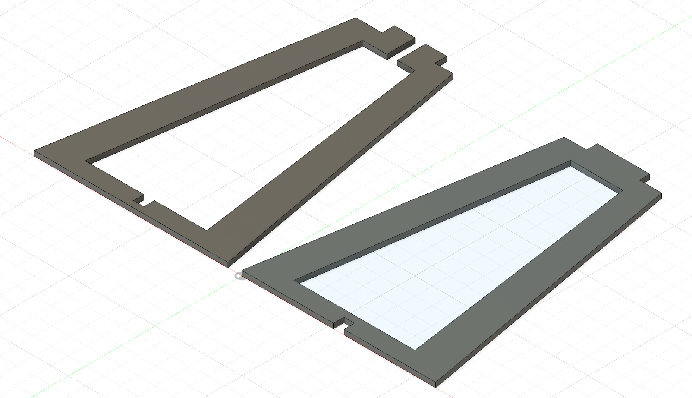
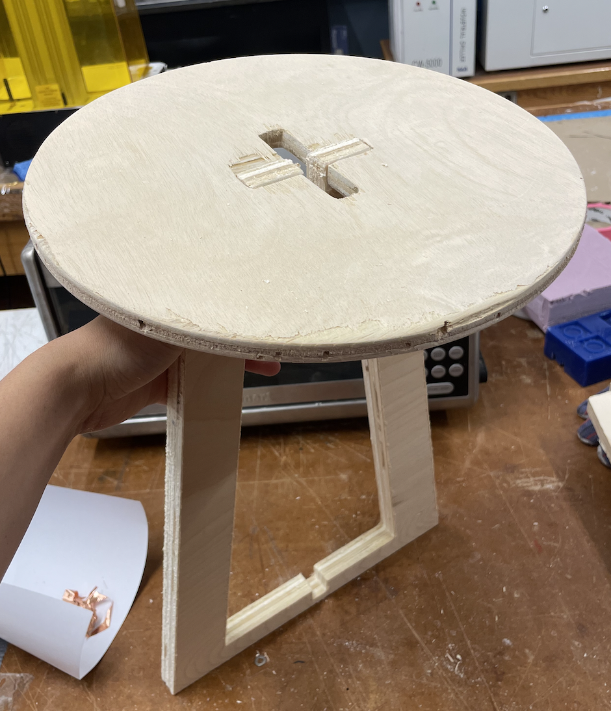
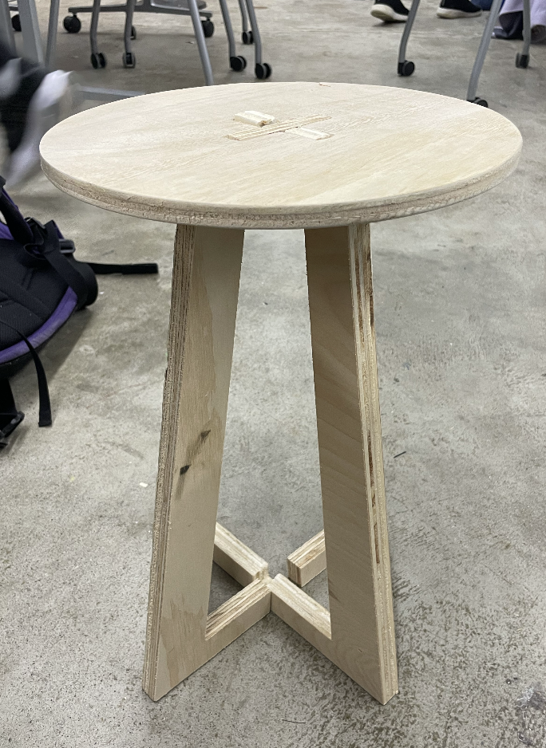
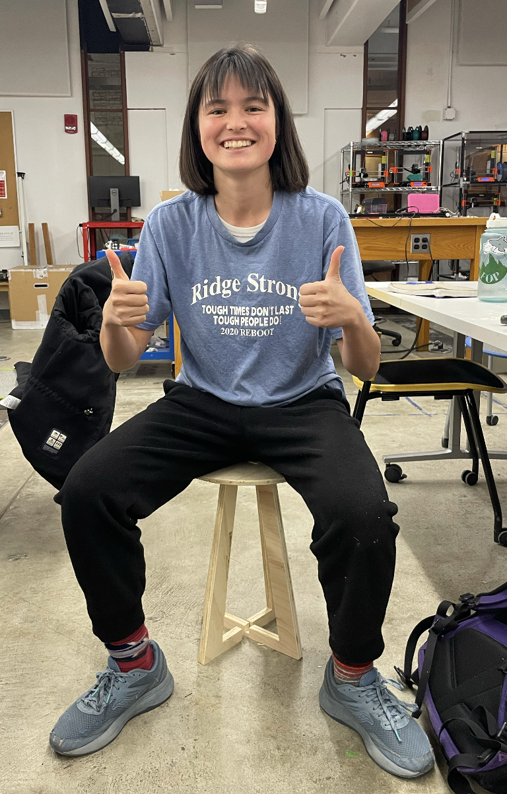

For my CNC project, I wanted to make a piece of furniture that I could actually use. I decided to build a stool, because this seemed feasible to do without too many separate parts. After looking at some examples of DXF files for stools online, I was especially inspired by the press-fit construction style and ended up making my own in Fusion. I made three separate pieces: a round piece for the seat, and two trapezoidal interlocking pieces for the legs. Here are my final files:
 The next step was to cut out these pieces using the CNC machine and Toolpath. I ran into many problems during this phase. For example, even though I used a caliper to measure the thickness of the wood I was using and then set up the parameters for the toolpath accordingly, the drill still did not cut fully through and I ended up having to bang my piece out with a hammer and do a lot of sanding/rasping. Nevertheless, I learned a lot of valuable tips while steting up the toolpath. For example, I learned how to select whether to cut my piece along the outside or the inside of the vector lines, how to properly zero the drill bit, how to do an aircut with the drill positioned above the wood, and how to orient the origin of the toolpath such that it starts cutting at the right place. I also learned how to use the nail gun to drill the piece of wood onto the sacrificial layer, as well as remove it after by hammering it sideways. It took me a while and a lot of help from Bobby to get these three pieces cut out, but by the last piece I felt that I had a pretty good idea of how to properly execute everything by myself.
My troubles were not ended after I got the pieces cut out. For one, they were extremely rough and splintery around the edges because the drill had not cut fully through the piece of wood. Moreover, I had miscalculated the notch sizes with respect to the thickness of my material, and so the leg pieces were slightly too wide to fit into the notches of the seat disc. As a result, I had to do a lot of post processing by hand. First I had to sand down the edges of everything, as well as the face of the seat, to avoid splintering myself or any user of the stool. I used a rasp to get rid of the biggest splinters, and then sandpapers of three different roughnesses to smooth and soften everything. I next had to deal with the fact that the legs were too wide for the notches. I used a combination of rasps, box-cutters, and handheld saws to whittle down the thickness of the leg notches until they could fit. This took a significant amount of time and labor. Finally, I was able to sucessfully stuff each leg into its respective notch. Here is a picture of one of the legs in its notch:
>However, here I encountered another problem: the notches of each leg that were suppposed to enable them to interlock with each other were also too narrow. This meant that it was impossible to fit both legs into the seat disc at the same time. Obviously, this would not work. The positioning of these notches was such that it would be extremely inconvenient/impossible to saw them narrower with a handheld saw, and it would take far too long to rasp them down because the wood is quite hard. As a result, I used the handheld saw to simply cut entire sections out of each leg so that they could fit between each other without having to rely on the particular notches. This worked well, although it does potentially destabilize the structure of the stool. I used epoxy to affix one of the legs to the disc in order to make it more structurally sound and stable. Ultimately, I had a working stool that bore my weight which I could actually sit on!
 Because it took so much longer than expected to sand and rasp down all the parts, as well as properly connect them to each other, this was all the post-processing I had time to do. I did not have time to mold, cast, or vacuum-form (although I do not think this would be very feasible with a stool anyways). The next steps I hope to take are to continue smoothing the edges to make the entire stool completely splinter-free, to more securely attach the legs to each other and to the seat, and to stain the wood so that it looks less unfinished. Nevertheless, I am extremely happy with what I have made so far, and thrilled that I can actually use it!